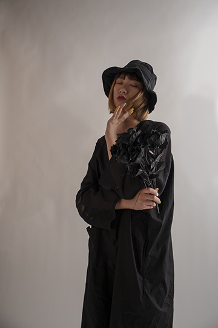

Education:
- University of Miami -- 2016-2020
- Beijing Royal School -- 2003-2016
- Cannon High School -- 2015
Experience:
| Time | Experience | Description |
|---|---|---|
| Feb.22 - Feb.23 2019 | PhilADtrophy | Participated in 2019 PhilADtrophy which was hosted by University of Miami. Member if Branches of Bravery team. Use Communication skill and creative design developed Social media marketing strategiey |
| Jan - Dec 2019 | Trigate Lomas Connect | Interned for Professor John Cuddihy. Using graphic design and Chinese background contributed to the company website and business plan development. |
| Jun 2013 | Chinese Bridge | Participated in 2013 Chinese Bridge which was hosted by Beijing Royal School. Use communicational skill to help other people. Helped to organize the closing ceremony. |
| Sep 2009 - Jun 2013 | Class Committee | Organized parents meeting every semester, organized Flea market, Organized class graduation ceremony. |
| Dec 2011 | Volunteer Work | Visited to a hospital for orphans with cerebral palsy with my family. Bought necessities for the hospitals and took care of children for three days. |
Skills:
- Adobe Photoshop Illustrator InDesign
- Microsoft Word PowerPoint
- Fluent in Chinese & English
- Piano
Work Profile
"Dancing Fruits" Shot in 2019 Sping by Sixuan Meng
Portraits shot in 2018 by Sixuan Meng